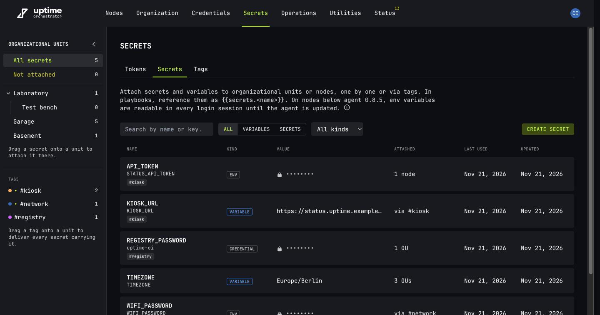
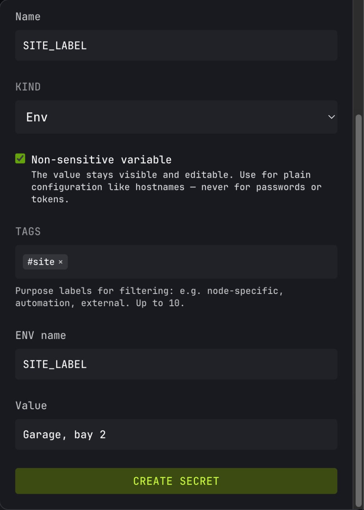
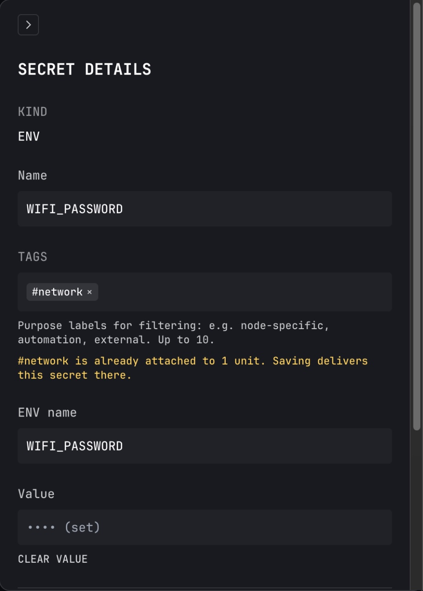
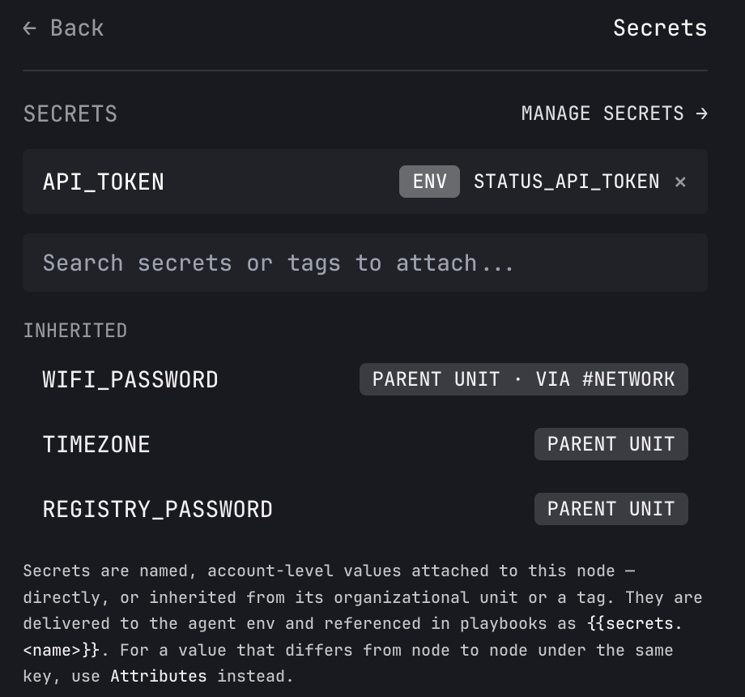
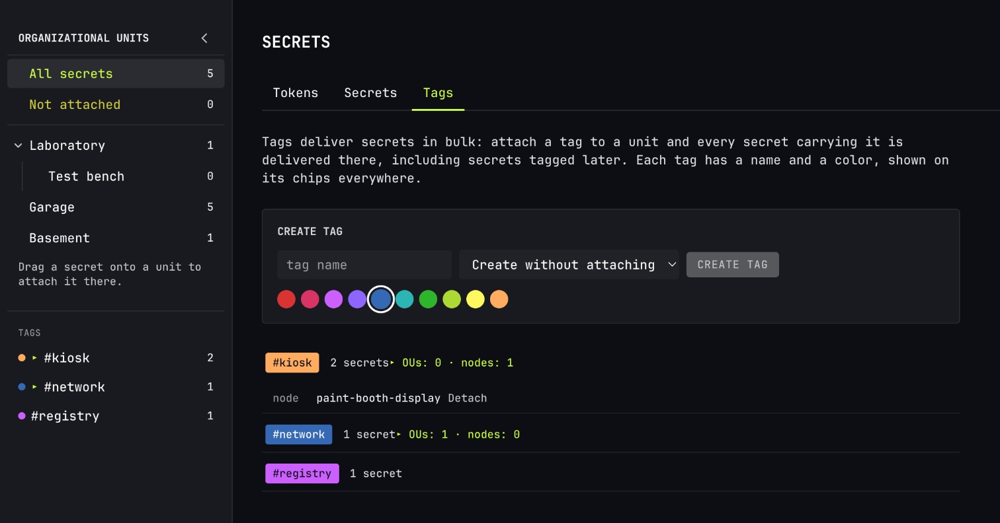
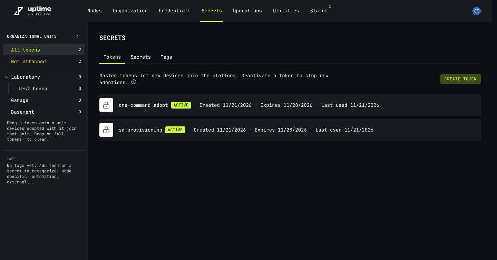
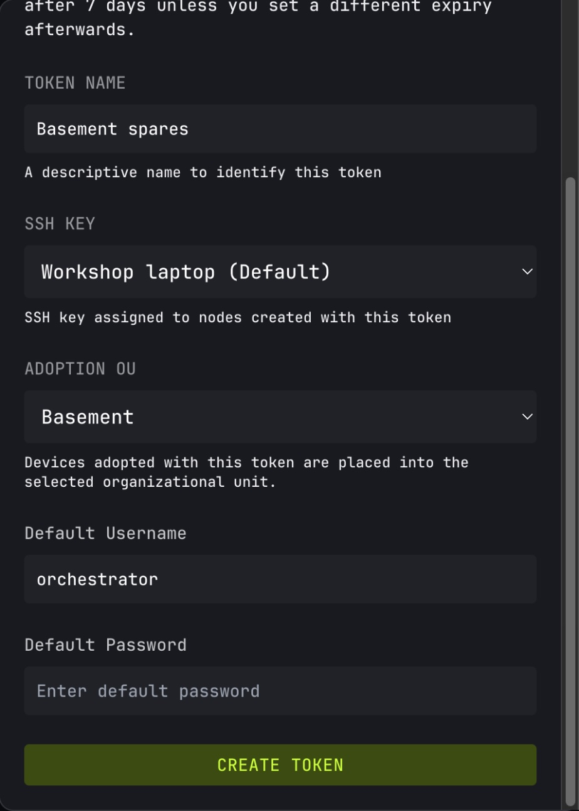

Secrets and variables
Store configuration values and credentials once, deliver them to units, nodes or tagged groups, and reference them from playbooks and utilities.
The Secrets page holds named values your devices and automation need: a dashboard URL, a time zone, a Wi-Fi password, a registry login. You store each value once, attach it where it is needed, and refer to it by name as {{secrets.NAME}}. The page also holds the Tokens that let new devices join the account.
Attaching follows the unit model described in Organizational units and policies: a node receives what is attached to itself, its unit and its parent unit, and the nearest level wins when two define the same name.
Secrets and variables

Every entry is one of two things:
- A variable (blue VARIABLE badge) is plain configuration. Its value stays visible and editable, for example
TIMEZONE=Europe/BerlinorKIOSK_URL. Use variables for hostnames, URLs and settings — never for passwords or tokens. - A secret (lock and dots in Value) is write-only. After you save it, nobody can read the value back in the UI or the API, including you; you can only replace or clear it.
All values are stored encrypted on the server. Reading a variable's value is limited to admins, and each read is recorded in the account's audit trail.
Each entry also has a kind:
| Kind | Second field | Used for |
|---|---|---|
| Env | ENV name — the environment variable name on the device (letters, digits and _, not starting with a digit) | Values a service on the node reads from its environment. API_TOKEN is delivered as STATUS_API_TOKEN. |
| Credential | Username | A login pair for playbooks, such as REGISTRY_PASSWORD with user uptime-ci. |
| Opaque | Label | Any other value you only use in playbooks. |
Only Env entries are written to the device as environment variables. Credential and opaque values reach a device only when a playbook uses them.
The columns show the entry's Name (with its ENV name, username or label below and its tags), Kind, Value, Attached (for example 3 OUs, 1 node or via #kiosk), Last used and Updated. Use the search box, the All / Variables / Secrets switch and the All kinds filter to narrow the list. Not attached in the rail lists entries that are delivered nowhere.
Create a variable or secret
- Click Create secret.
- Enter a Name. It is the name you use in
{{secrets.NAME}}, unique in the account, and must not contain}. - Choose the Kind.
- Tick Non-sensitive variable for a variable. Leave it clear for a secret.
- Optionally add Tags (press Enter after each, up to 10).
- Fill in the ENV name, username or label, and the Value. An env value must be a single line.
- Click Create Secret.

A new entry is not delivered anywhere until you attach it, or give it a tag that is attached somewhere. If a tag you add is already attached, the form says where the entry will be delivered when you save.
Edit, convert and delete
Click a row to open it. You can rename it, change tags, ENV name and value, and see Attached to.

- For a secret, the Value field shows
•••• (set). Typing a new value replaces it; Clear value empties it. - A variable has Convert to secret. This makes the value write-only and cannot be undone. To turn a secret back into a variable, create a new variable and delete the secret.
- Delete asks for confirmation and removes the entry and its attachments.
Attaching to units and nodes
You can attach an entry in any of these ways:
- Drag its row onto a unit in the left rail.
- On a unit's Contents tab (Organization), type in Search secrets or tags to attach… under Secrets.
- In a node's panel, Properties → Secrets, use the same search box to attach directly to that one node.
The precedence when two entries with the same name reach one node: node beats unit, unit beats parent unit, and within one level a direct attachment beats one through a tag.
The node's Secrets view shows exactly what it receives and from where:

Entries under Inherited come from the unit or a tag; the badge says which. For a value that must differ from node to node under the same name, use the node's Attributes instead (also under Properties): attributes are per-node env values, referenced as {{node.attributes.KEY}}. They count toward the account's secret quota.
Tags
The Tags tab groups entries for delivery in bulk. Attach a tag to a unit or node and every entry carrying that tag is delivered there — including entries you tag later.

- Create tag: type a name (1–40 characters of
a–z,0–9,.,_,-), pick a color, and either Create without attaching or choose a unit in the drop-down. - Each tag row shows how many entries carry it and where it is delivered (OUs: N · nodes: N). Click that summary to list the targets, each with Detach.
- To attach an existing tag, drag it from the Tags list in the rail onto a unit.
The example account uses #network (attached to Garage, carries WIFI_PASSWORD), #kiosk (attached to the node paint-booth-display, carries KIOSK_URL and API_TOKEN) and #registry (attached nowhere).
How a node receives its values
Env entries are written to the node in a file only root can read, /etc/orchestrator/env, under their ENV names. A systemd service loads them with:
[Service]
EnvironmentFile=/etc/orchestrator/envThe page itself warns about older agents: "On nodes below agent 0.8.5, env variables are readable in every login session until the agent is updated." Agents before 0.8.5 write the values to /etc/environment, which every login session reads. Update those nodes' agents before you attach secrets to them.
The file is written when the node's access is provisioned into its installed system, which happens during an OS install (the Provision access step). Detaching an entry removes it from the file at the next provisioning.
Using values in playbooks and utilities
In a playbook step, write {{secrets.NAME}} wherever a parameter accepts text. The value is filled in on the server when the step runs, from the entries that reach that node, so a node that does not receive the entry cannot use it. The Rotate Wi-Fi password playbook in Garage uses {{secrets.WIFI_PASSWORD}}.
In a utility parameter, you can use {{secrets.NAME}} for variables only and {{node.attributes.KEY}}. A secret is refused there. The kiosk on paint-booth-display shows the URL {{secrets.KIOSK_URL}}.
Changing a value
Edit the entry and click Save. When devices see the new value depends on where it is used:
| Used in | New value takes effect |
|---|---|
| A playbook | At the next run. |
| A utility parameter | At the next apply of that utility to the node. |
| The env file on the device | At the next provisioning of the node's access (an OS install). |
Tokens
The Tokens tab holds master tokens: the credentials new devices present to join your account. They are not API keys.

Each token shows its name, status (ACTIVE, INACTIVE or EXPIRED), when it was created, when it expires and when it was last used. A device that adopts with a token appears as Pending Approval until you approve it (Add a device).
Where tokens come from:
- Create token on this tab. The form asks for a Token Name, the SSH Key given to nodes created with it, an Adoption OU (devices adopted with the token are placed in that unit; None leaves them unassigned) and Default Username and Default Password.
- Downloading an SD provisioning bundle (Nodes → Add node → Master image) creates a token, named
sd-provisioningby default, and puts it inside the bundle. One command on the same panel creates one too.

Tokens expire 7 days after creation unless you set another expiry afterwards. The token value is shown once, right after Create Token, together with Download Adoption File; it is never shown again, and the adoption file can only be downloaded at that moment.
Click a token to see its details. Deactivate stops new adoptions with it immediately (Activate reverses that); Delete removes it. You can also drag a token onto a unit in the rail to set its adoption unit. Devices already adopted keep working either way: a token is only used to join.
Next: Utilities: managed software.